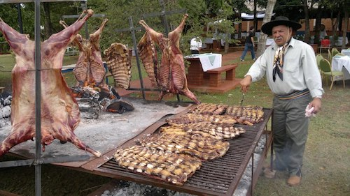
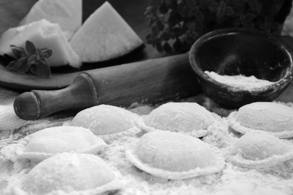
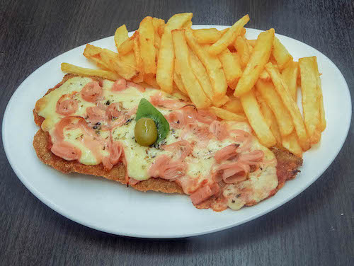

Diego Bolettieri
Founder & Director @Be Better Hotels
Entrepreneur since 2009, always workinon Hospitality & Travel industry.
Entrepreneur since 2009, always workinon Hospitality & Travel industry.
|  |
"Asado Argentino"The Argentine barbecue is designed to enjoy it with friends and family. The preparation of some meats usually lasts up to five hours, during this time you eat, drink and enjoy the day, wine and conversation. |
|  |
"Sorrentinos"The Sorrentinos are a type of stuffed Argentine pasta, similar to the ravioli but larger and circular in shape. Made with flour, usually carry a variety of fillings that can combine cheese, ham, vegetables or nuts |
|  |
"Milanesa Napolitana con Papas Fritas"The "Milanesa Napolitana" is a typical dish of the Gastronomy of Argentina. It consists of a Milanese, usually beef, taken to the oven to be coated as a pizza, with tomato sauce and mozzarella cheese, adding different ingredients (ham, onion, olives, fried eggs, etc). |